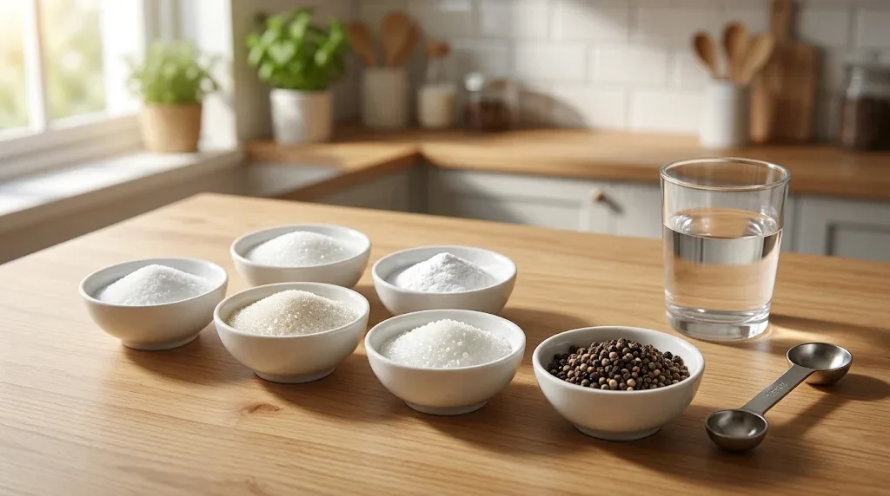
🧂 奇妙的溶解三年級自然 第二次月考範圍｜老師教學用
整合翰林「奇妙的溶解」與康軒「廚房裡的科學」。每課上方有 ① ② ③ … 圓形按鈕，照順序點就能上課；每一步都附👩🏫 老師教學提示（引導問句、準備、常見迷思）。
藍色＝水
紅色＝酸性
紫色＝中性
藍綠＝鹼性

整合翰林「奇妙的溶解」與康軒「廚房裡的科學」。每課上方有 ① ② ③ … 圓形按鈕，照順序點就能上課；每一步都附👩🏫 老師教學提示（引導問句、準備、常見迷思）。
廚房裡有好多白白的粉末和顆粒，標籤掉了怎麼辦？先點照片上的數字，認識六種材料。
觀察物質有三個方法，點照片翻過來看：
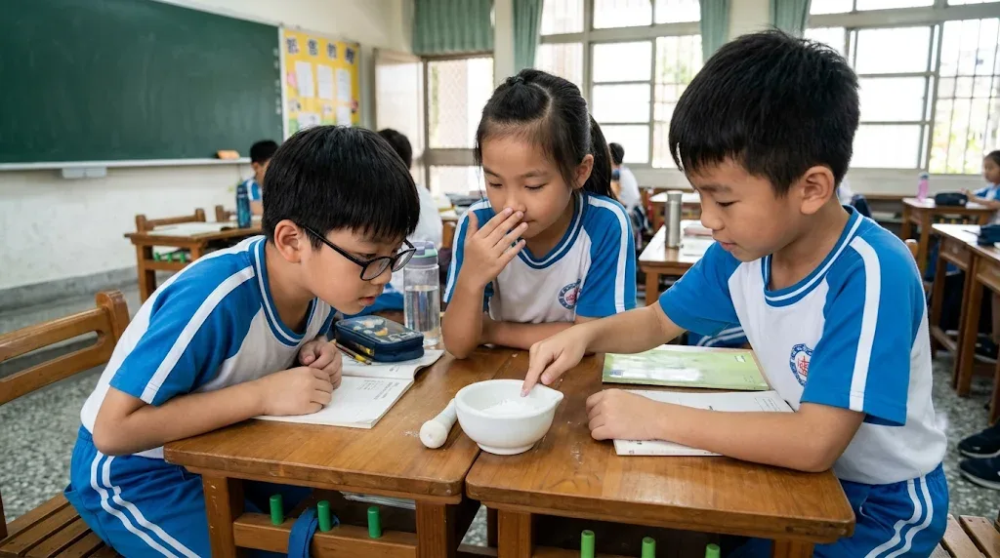
① 眼睛看顏色、顆粒大小、形狀。例如二砂是黃色、細沙顆粒不透明。
用手搧的方式聞，不要把鼻子貼上去。
用手指搓一搓，感覺顆粒的粗細。
顆粒太小看不清楚？用放大鏡幫忙！
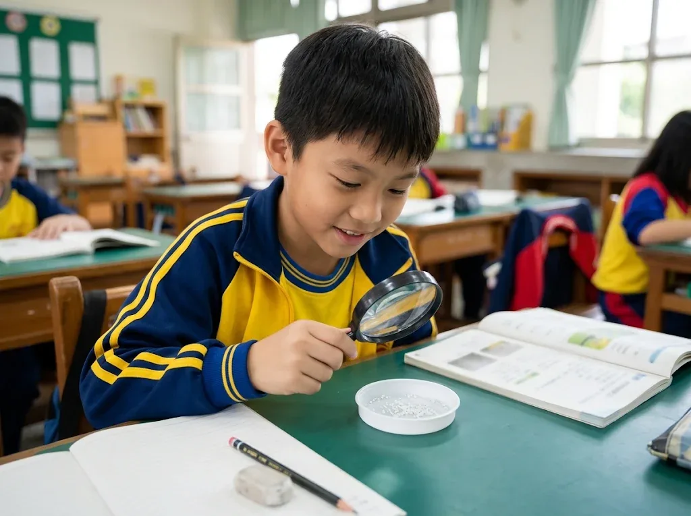
手握放大鏡的握柄，調整放大鏡和物體的距離，直到看清楚。
放大鏡下，六種顆粒的形狀和顏色更清楚：
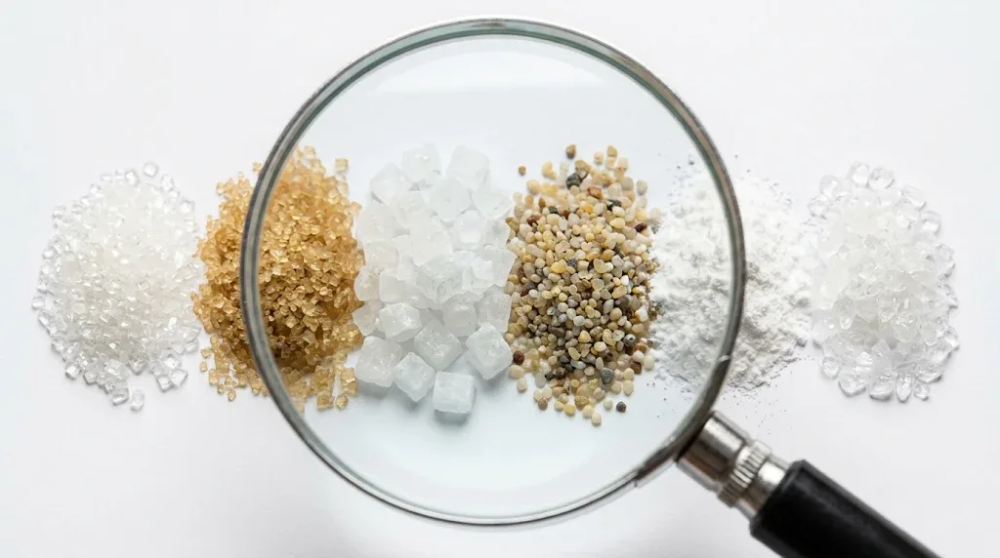
白砂糖、黃砂糖、粗鹽、細沙、小蘇打粉、檸檬酸（由左至右）
也可以拍照再放大來觀察。
溶解實驗要用到這些器材。點按鈕看看每一種的用途：
用量筒量水，眼睛要平視水面最低處。
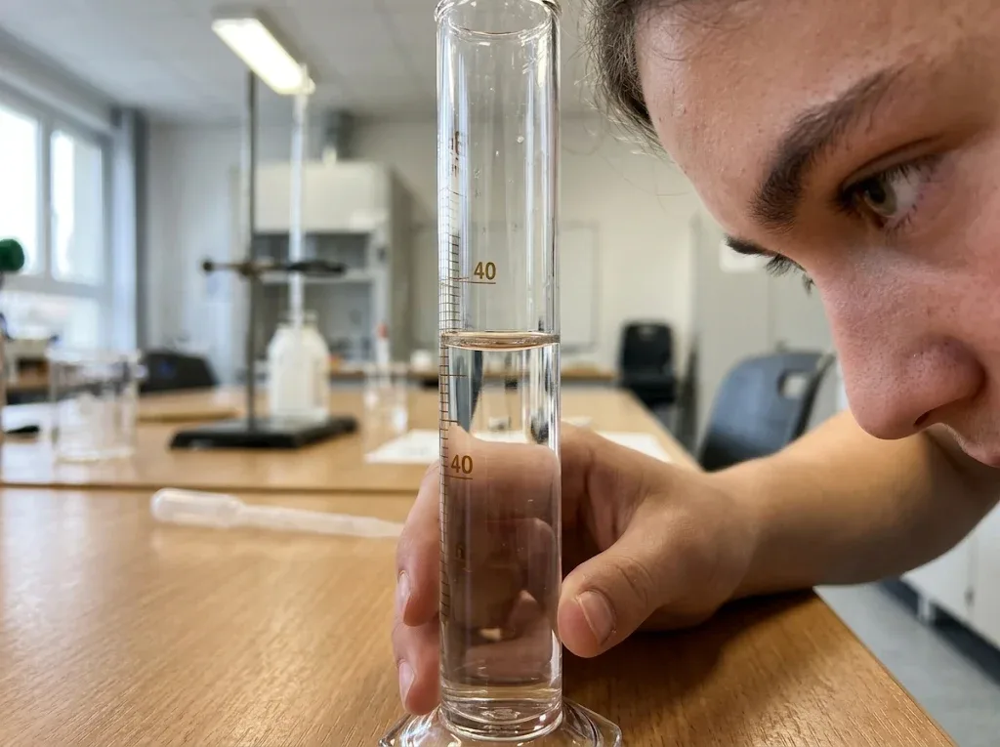
視線與水面最低處同高。
每次取同樣多的粉末，要刮成平匙：用玻璃棒刮平匙面上的顆粒，就是一平匙。
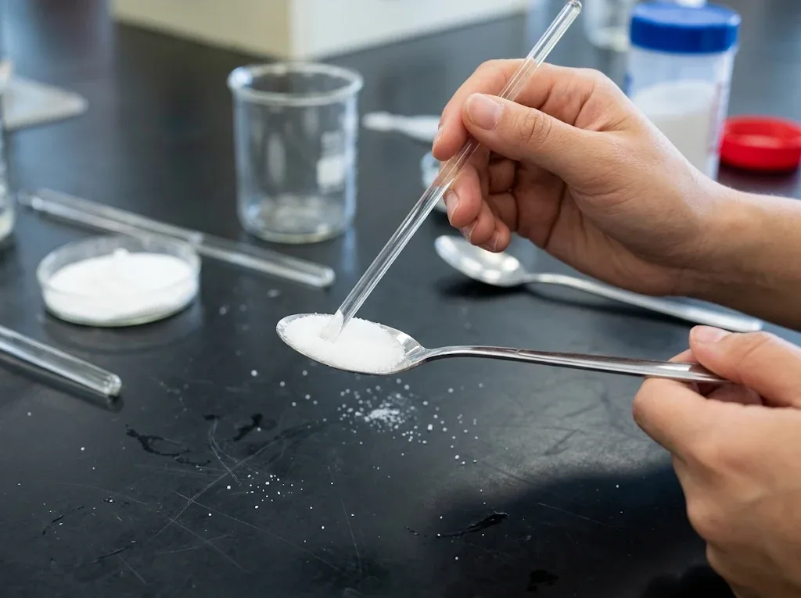
玻璃棒刮平匙面。
煮綠豆湯時加了砂糖，喝的時候只看到綠豆，糖真的消失了嗎？
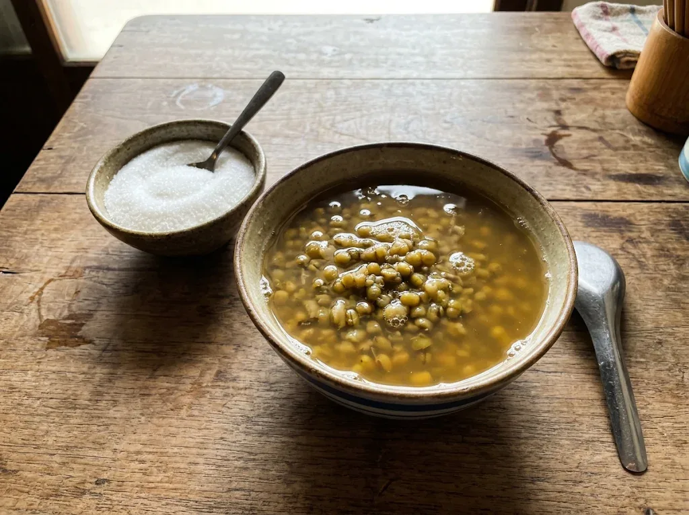
綠豆湯加砂糖
有人說「糖消失了」，有人說「糖還在湯裡」。你覺得呢？
喝的時候可以嚐到甜味。所以糖還在湯裡，只是看不見顆粒。
砂糖放進水裡，攪拌後顆粒會慢慢變小、看不見。
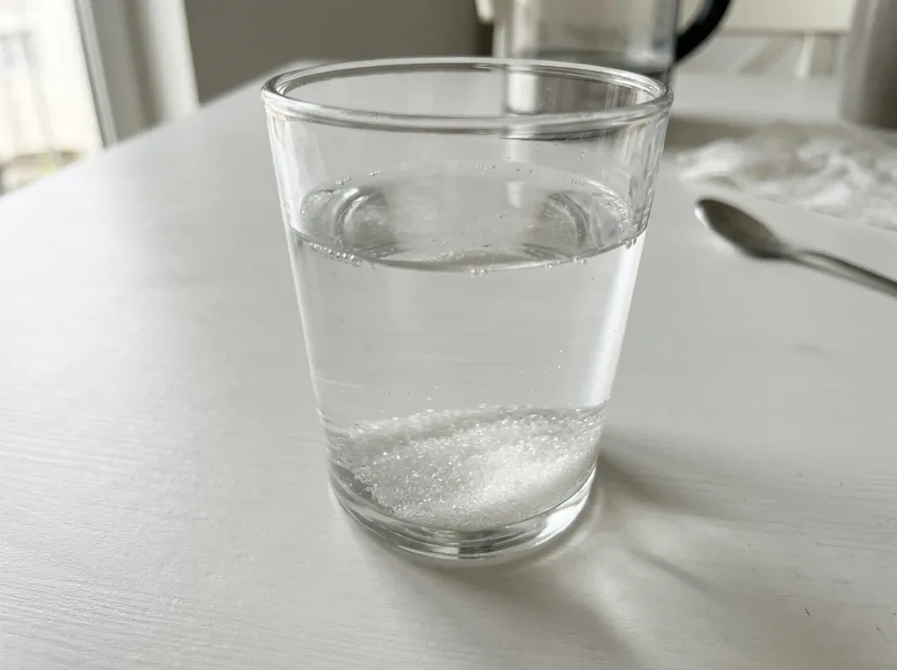
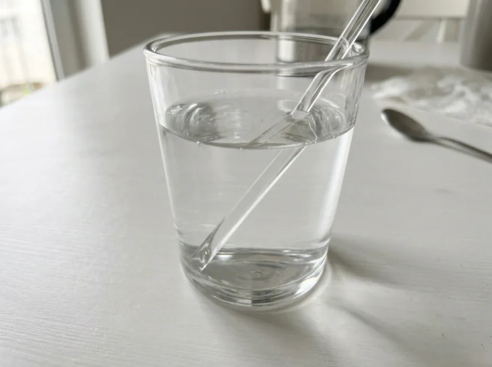
👆 點照片：攪拌前 → 攪拌後
溶解：物質的顆粒在水中慢慢變小而看不見，與水均勻混合的現象。
砂糖溶在水裡，成為水溶液（糖水）。
🎨 畫筆提示：用黃色圈出杯底的糖粒，攪拌後再用藍色畫出「均勻」的水。
食鹽、砂糖、細沙放進水裡攪拌，會怎麼樣？
康軒版用的是廚房材料。由左至右：砂糖、食鹽、黑胡椒粒、小蘇打粉、檸檬酸。
黑胡椒粒特別：有一部分溶解（使水變成灰灰的顏色），有一部分無法溶解，沉在杯底。
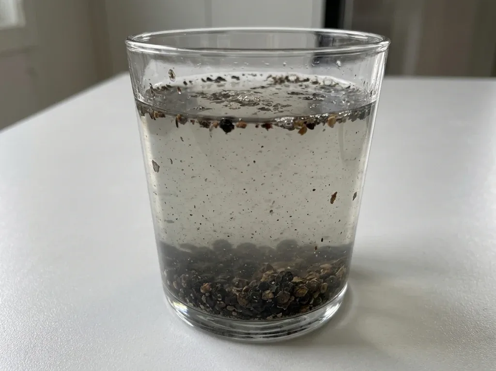
黑胡椒粒：部分溶解、部分沉底
點一點，把結果整理起來：
✅ 砂糖、食鹽、小蘇打粉、檸檬酸：完全溶解，成為水溶液。
❌ 細沙：沉在杯底。
⚠️ 黑胡椒粒：部分溶解、部分沉底。
利用「能不能溶解」這個特性，可以區分部分物質。例如食鹽和細沙看起來都是顆粒，丟進水裡就能分辨。
食鹽可以一直溶解下去嗎？一次加一平匙，攪拌到完全溶解，再加下一匙，記錄加了幾匙。
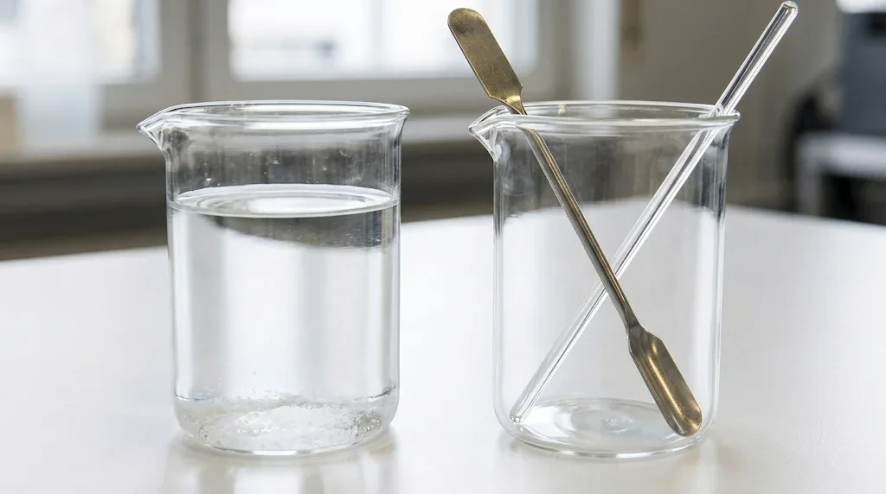
加到杯底出現溶不掉的食鹽顆粒，就停止。
加到某一匙時，杯底出現溶不掉的顆粒，叫做沉澱。
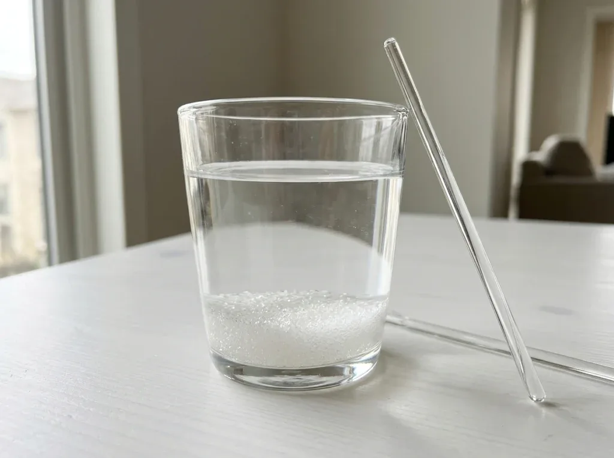
砂糖在固定水量中，溶解的量是有限的。
結論：大多數可溶於水的物質，在固定的水量中，溶解的量是有限的。
杯底有沉澱時，一直攪拌會怎麼樣？
攪拌可以讓食鹽均勻分散到水中，加快溶解的速度。
攪拌不能增加溶解的量。杯底有沉澱時，再怎麼攪拌也不會多溶一點。
泡紅茶時加糖，糖加多了會沉在杯底。用什麼方法可以讓沉澱的糖繼續溶解？
我認為增加水量或提高水溫，可以讓砂糖繼續溶解。
媽媽煮糖水時會加熱；發泡錠要依照建議的水量泡才能完全溶解。
方法 1：增加水量
在有沉澱的糖水中再加水，充分攪拌。
方法 2：提高水溫
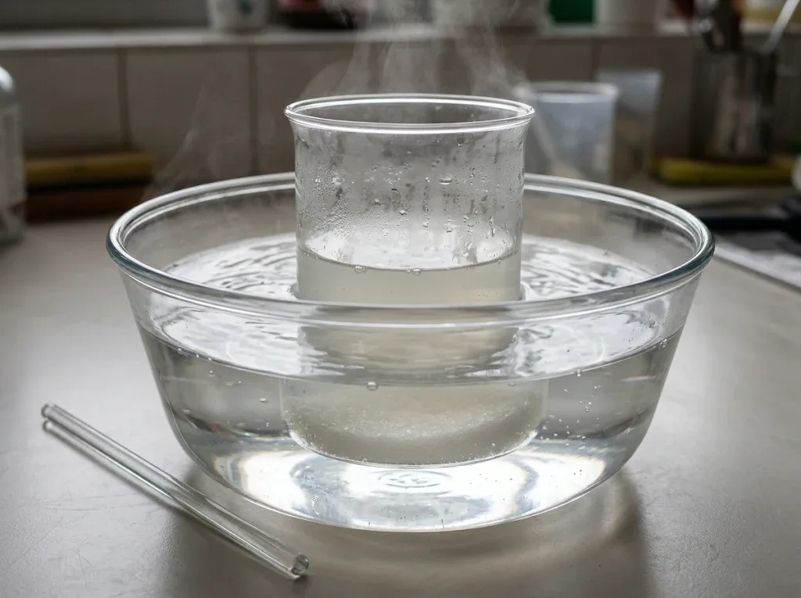
把有沉澱的杯子浸入熱水（隔水加熱）。
結果：沉澱變少或不見。所以水量和水溫都會影響溶解的量。
食鹽在不同水溫，溶解的量一樣嗎？左邊常溫水、右邊熱水，加入一樣多的食鹽：
熱水杯底的鹽顆粒比較少 → 在熱水中溶解的量較多。
生活裡到處都有溶解！點照片看看：
洗衣粉、小蘇打粉、肥皂都溶在水裡，才能用來清潔：
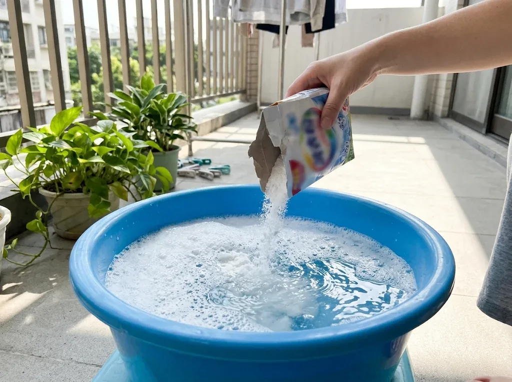
洗衣粉溶在水裡洗衣服
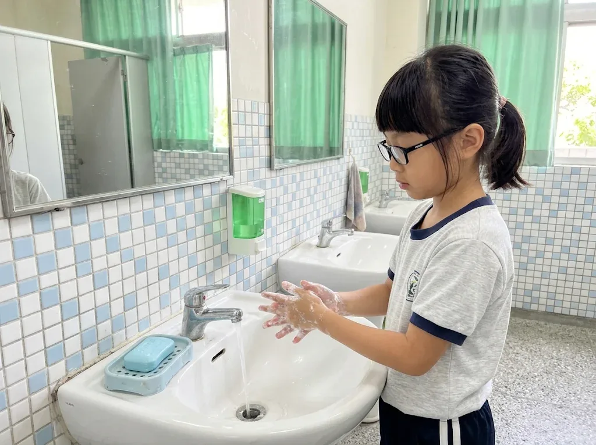
肥皂溶在水裡洗手
沙子和食鹽混在一起，一顆一顆挑很困難。利用溶解的特性就能分開！
鹽可以溶解在水中，沙子不能。所以加水攪拌後，鹽溶成鹽水，沙子沉在杯底，再用濾紙過濾就分開了。
有些藥物做成膠囊，外殼可溶於水；外殼溶解後，才會釋出裡面的成分。洗衣膠囊也是同樣的概念。
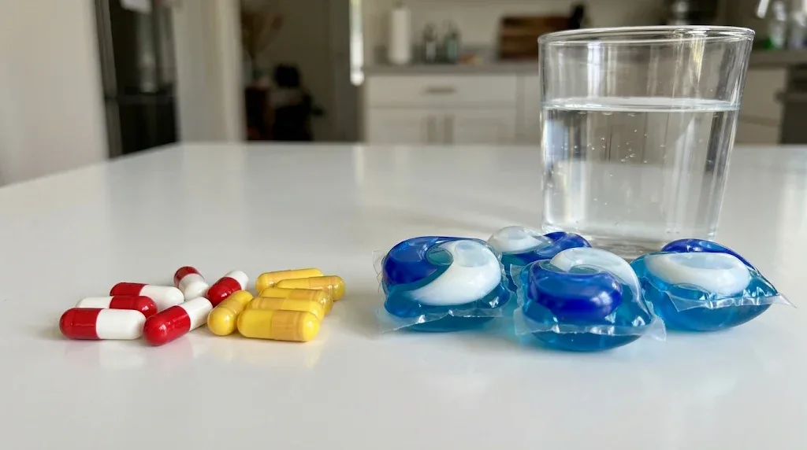
藥物膠囊（左）與洗衣膠囊（右）
廚房的材料溶在水裡，成為水溶液。水溶液可以分成酸性、中性、鹼性。能用感官分辨嗎？
酸性水溶液通常聞起來有酸酸的氣味，容易分辨；但只用感官無法準確判斷酸鹼性。
吃紫色高麗菜沙拉時倒入醋，顏色會改變。把紫色高麗菜做成菜汁，就能當酸鹼指示劑。
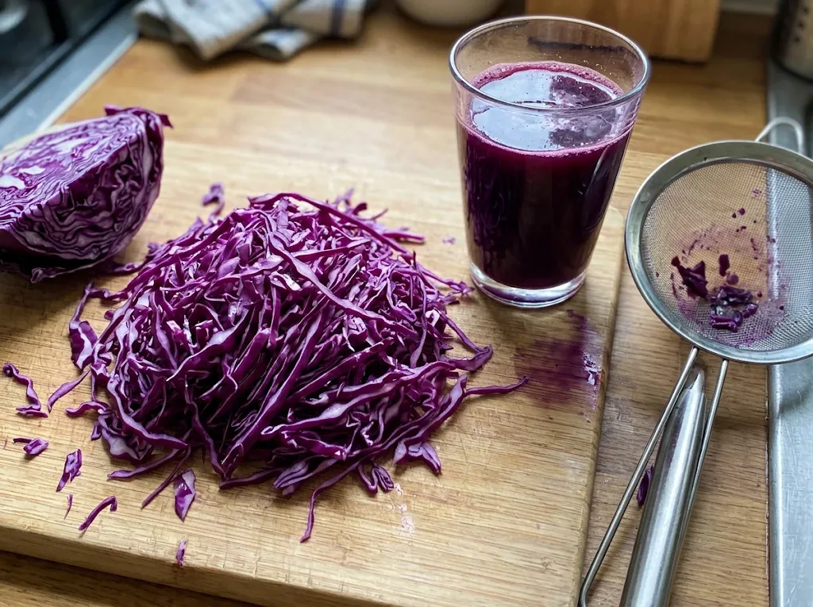
紫色高麗菜切絲，熱水浸泡、冷卻、過濾，就是紫色高麗菜汁。
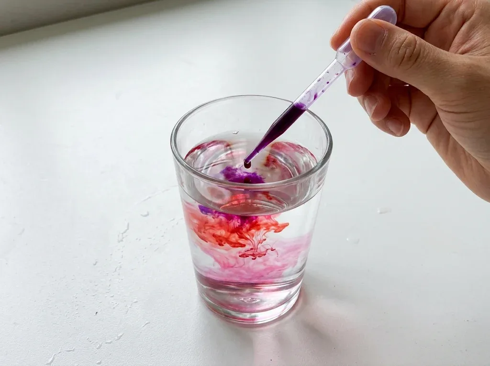
用滴管吸取菜汁，滴入各種水溶液。
加入紫色高麗菜汁後的顏色。點按鈕看每一杯：
🔴 紅色～粉紅色：醋、檸檬酸水。
🟣 紫色（不變）：食鹽水、砂糖水。
🟢 藍綠色：小蘇打水。
還有些植物汁液在酸鹼不同時也會變色：
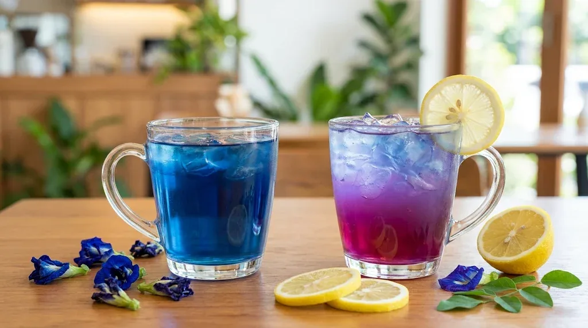
蝶豆花茶（藍色）加入檸檬汁後變成紫色
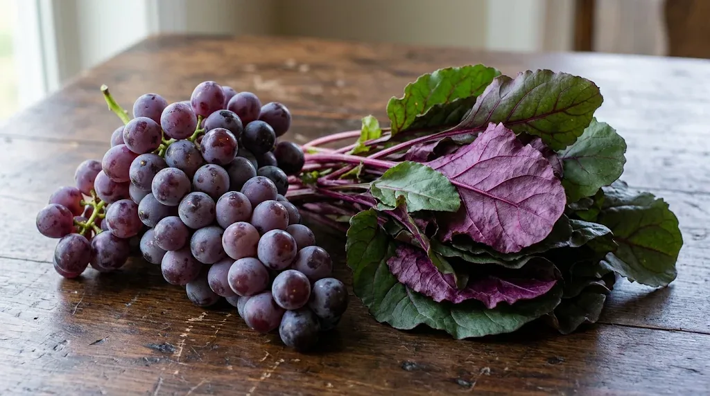
紫色葡萄皮、紅鳳菜葉的汁液也會變色
桌上沾到油漬，只用水擦還是油油的。可以沾點肥皂或噴洗碗精。
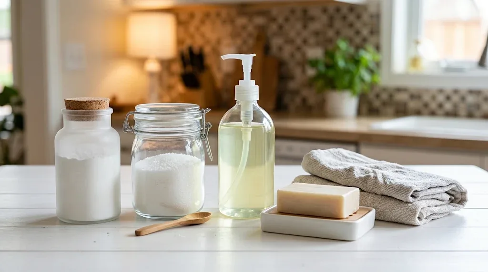
小蘇打粉、檸檬酸、洗碗精、肥皂，都是生活中的清潔幫手。
肥皂或洗碗精的成分遇到油汙，會和油汙結合，把油汙帶離物品表面，水就容易帶走了。
較環保的去汙：小蘇打水清潔衣服汗漬、檸檬酸水清潔水垢。
氣泡水裡為什麼有這麼多泡泡？因為二氧化碳溶解在水裡！
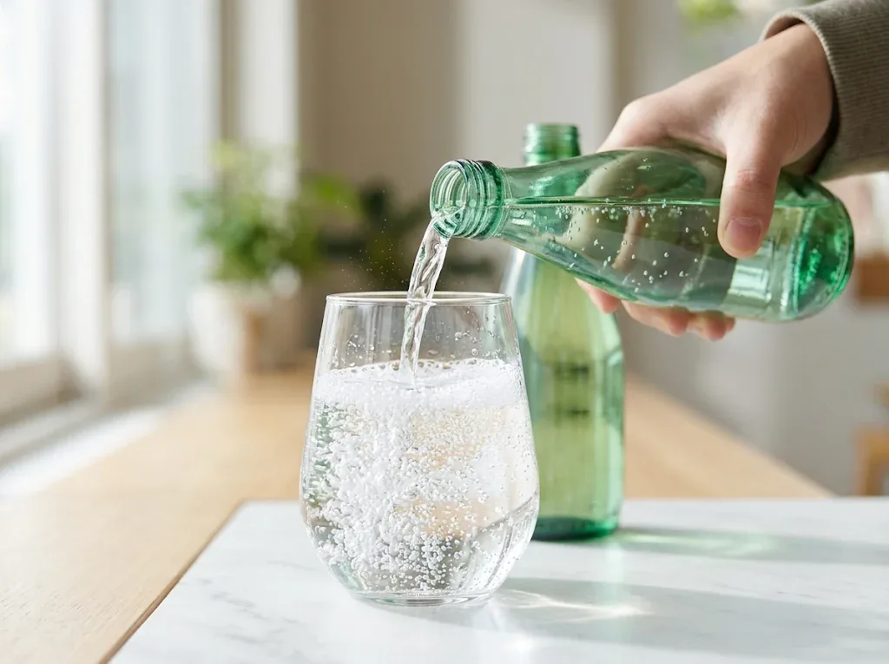
打開瓶蓋，二氧化碳跑出來，變成氣泡。
綜合各校段考題型，共 題。每題都有 📖 解析；答錯時會說明為什麼錯。